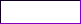
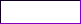

TO-DO LIST:
UPDATES LOG

[#0021] JANUARY 29, 2023:
the guestbook is now up and running, thank god! i was working on it for a bit the past 3-ish days. some notes:- hosted for the most part by HTMLCOMMENTBOX
- includes the ability to add images, like comments, as well as use minor html (italics, font coloring, bolding, underlining, etc.)
- also allows me to delete any unsavory comments that may happen. i doubt that will happen though, because my haters are weak üòé
[#0020] JANUARY 12, 2023:
today's edits include:- finished adding the stamps-- the current stamps total at a nice, even, reasonable number of 400 FUCKING STAMPS
- added my buttons backlog as well! the current total is 125-- which, honestly, seems much more managable than 400
- a mild crisis over how there's people out there that just... don't credit people for their work...
[#0019] JANUARY 11, 2023:
i've finally began work on my digital collection pages... which, honestly, i'm surprised i got this much done so far. the current stamp count is a whopping 341-- and i'm not done adding yet!current features include:
- a small window for navigation between sections
- sections that are housed within an iframe in the main window
- a promise to always credit everything i can-- and you should too!
- an absurd amount of stamps
- lots of unfinished pages!!
[#0018] DECEMBER 23, 2022:
began work on the about page, a huuuge undertaking because i love maximalism sooo much... about page currently includes:edit as of dec. 26: removed some things temporarily as i was not happy with them at the moment!
- an icon window
that contains a picrew i made (with added link to the picrew itself-- click the creator's watermark!) - a small snippet of information on the left underneath the icon window
- spamton neo is hanging out and telling you to return home. do it. now!
an abundance of glittery gifs and pixelscheck out that kyomaku pixel i made!! he's sitting on the glittery window to the right
[#0017] DECEMBER 16, 2022:
added journal entry #0008 and more!!- added a new stream of consciousness window to the journal homepage
- the stream of consciousness will function similar to twitter, as in i think something and i post it and that's that
[#0016] NOVEMBER 25, 2022:
journal entry #0007 was added this time!![#0015] NOVEMBER 15, 2022:
small additions this time around:- added a to-do list to the updates log page
- added a pencil pixel to the journal homepage
- small refactoring to the homepage, mainly making it to where the exterior deco pieces don't fuck up on my neocities profile page preview picture thing
[#0014] NOVEMBER 13, 2022:
adjusted the start menu a little:- couldn't figure out how to make the sidebar for it stretch to the height of the entire menu whenever a subsection was opened, so i just removed it
- added subsections which can be opened and collapsed when clicked. they're identifiable by green text rather than white
[#0013] NOVEMBER 12, 2022:
finally redesigned the updates log page, among other things:- changed the taskbar clock to use an iframe widget from timeanddate.com! works a lot better imo, since it displays my time!!
- contained the wobbly text logo into a div so it doesn't show up weird on the neocities profile image. i plan to do the same for the deco above the status cafe box as well
[#0012] NOVEMBER 9, 2022:
added a whole freaking taskbar at the bottom!!! with added functionality!!:- contains the sitemap as the start button, for easy access on any page that isn't a journal entry
- tells the time on the right, which is a bit redundant since it's right over where the built in pc clock is but i DID IT because i COULD!!!
- shut down button brings you back to my neocities profile :)
- FIIINALLY added a music player!! volume is at 0.4 and NO AUTOPLAY because i hate whenever websites have like autoplay music thats at max volume. that shit sucks
[#0011] NOVEMBER 8, 2022:
did some more additions:- new animated title just for funsies
[#0010] NOVEMBER 7, 2022:
did a little bit of adjusting and tuning things this time around:- changed font from ms gothic to ms ui gothic to make it easier to read
- shrunk the tv a bit
- added animated sparkles around it
- added a spinning crystal heart graphic
- added a pixel of my dragon paradisso
- added an animated expanding/shrinking pixel star
- used one of the little star flairs from near the pixels under the icon picture near the crystal heart
[#0009] OCTOBER 28, 2022:
updated the journal pages to fit with KOTS 3.0, with added functionality:- journal entries are now in a separate folder from the journal homepage itself
- easier flipping between journal entry pages (navigation arrows at the bottom)
- lists the entry number between the navigation arrows
- each entry includes a way to return to the journal homepage at the top
[#0008] OCTOBER 26, 2022:
following the rollout of KOTS 3.0 (Kyomaku's Online Theme Styling), the journal homepage has been revamped!visual changes besides realigning are:
- simplified the background once more
- included the navigation buttons on the left
- made it much more easy to read. to me at least
- made the warning more distinct
- now includes a way to distinguish which entries have sensitive subjects (none yet)
- can now support up to 9,999 entries in the sidebar. i will never make this many. but its good to have 4 digits just in case
[#0007] OCTOBER 23, 2022:
we are now in 3.0!!completely rewrote the homepage unlike last time where i just shat all over it and made it ultra-spaghetti-code-mode
code is much more modular with better documentation for my own personal ease of access
also no longer using imgur as an image host-- actually uploading all my images here now
visual changes besides realigning everything are:
- simplified the background-- even i was having trouble looking at that for a while. a shame because it was a cool effect but maybe i can use it elsewhere
- navigational image links on the left glow green when hovered over
- navigational image links on the left now make a sound when hovered over!!
- regular text links are no longer ugly and blue/purple or underlined unless i want them to be because i said so
- main content profile picture is now contained in a tiny window
- spruced up the name text by giving it a small rainbow star border underneath
- done my age pronouns and gender justice by changing the font and adding a custom underline
- sprinkled a bunch of little pixels and stickers around underneath the text
- updates box now has a link to this page
- oh yeah also this page exists now
- added a neat little "new" graphic for the latest update
- added a small button collage underneath my statuscafe window along with a little rainbow heart divider thing
- added more variation to the falling stars... maybe you should look a little closer üöΩ
- added a little spamton angel marquee to the bottom of the page, just underneath the mini stamp gallery (big stamp gallery coming later)

[#0006] AUGUST 18, 2022:
completely overhauled the homepage's look to be much more accurate to the windows 95/98 stylestarted working on my art gallery page although i have no fucking idea what i'm even doing
[#0005] JUNE 9, 2022:
tweaked the journal pages to be more easy to browse betweenadded more directory links on the side for future pages (those fucking links were a bitch to get placed right)
[#0004] JUNE 6, 2022:
second journal entry added[#0003] JUNE 4, 2022:
tweaked the main page a bitadded the updates box
started and finished the journal homepage
added the first journal entry
added the status.cafe box
[#0002] JUNE 3, 2022:
started the main page![#0001] JUNE 1, 2022:
finally decided to start :D
 
